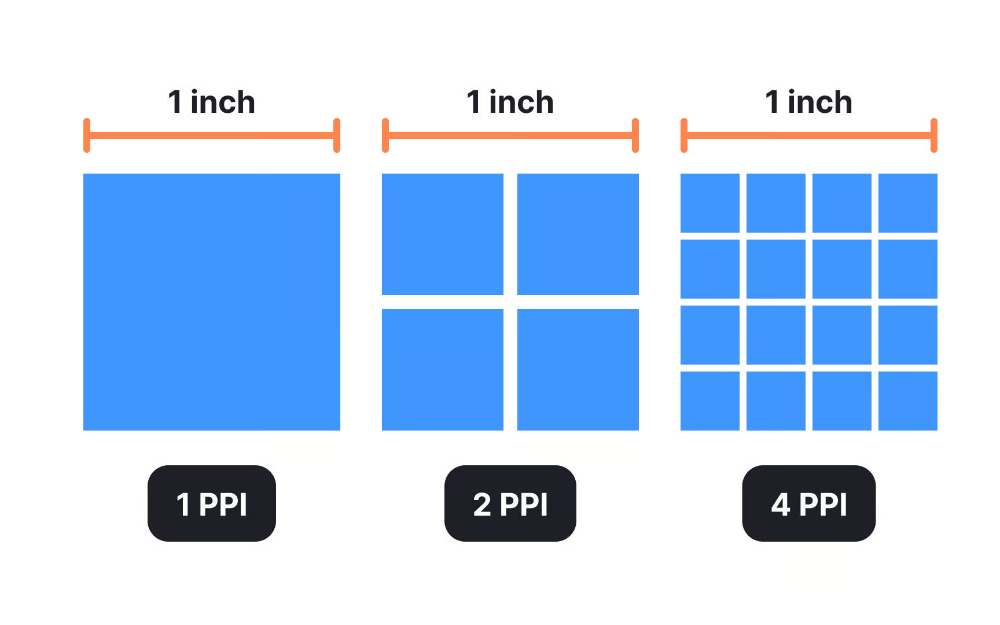

Макеты элементов пользовательского интерфейса (Layout)
Одной из проблем при разработки приложения является адаптация элементов экрана (пользовательского интерфейса) под устройства с разными характеристиками экранов.
Рис. 1. Различные размеры экранов устройств Android.
Density-independent pixel (dp)
Относительный параметр (не зависящий от плотности экрана пиксель) был введен во избежании проблем с компановкой элементов внутри разного размера экранов пользовательского оборудования.
Рис. 2. Размеры ширины и высоты TextView в dp.
Данный параметр учитывает плотность пикселей (Pixel per Inch - PPI) экрана или screen density.
Все Android-виджеты измеряются в относительных величинах (dp).
$$ dp = \frac{width_{pixels} * 160}{density_{screen}} \text{, где} $$
$160 - \text{средняя плотность пикселей (baseline density)};$ $ width_{pixels} - \text{ширина экрана, например 1920x800, 800 - ширина};$ $density_{screen} - \text{плотность пикселей}.$

Рис. 3. Наглядный пример отображения плотности пикселей (PPI).
Таблица. 1.
Density qualifier |
DPI estimate [ |
Description |
|---|---|---|
|
~120 |
low-density |
|
~160 |
medium-density ( |
|
~240 |
high-density |
|
~320 |
extra-high-density |
|
~480 |
extra-extra-high-density |
|
~640 |
extra-extra-extra-high-density |
|
- |
Не зависят от плотности. |
|
~213 |

Рис. 4. Пример одинакового размера экрана, но разной плотностью пикселей.